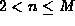

Data Structures and Algorithms
with Object-Oriented Design Patterns in Java
Data Structures and Algorithms
with Object-Oriented Design Patterns in Java
In Section  ,
the inorder traversal of a binary tree is defined as follows:
,
the inorder traversal of a binary tree is defined as follows:
In an inorder traversal the root of the tree is visited after the entire left subtree has been traversed and in a binary search tree everything in the left subtree is less than the root. Therefore, the root is visited only after all the keys less than the root have been visited.
Similarly, in an inorder traversal the root is visited before the right subtree is traversed and everything in the right subtree is greater than the root. Hence, the root is visited before all the keys greater than the root are visited. Therefore, by induction, the keys in the search tree are visited in order.
Inorder traversal is not defined for arbitrary N-ary trees--it is only defined for the case of N=2. Essentially this is because the nodes of N-ary trees contain only a single key. On the other hand, if a node of an M-way search tree has n subtrees, then it must contain n-1 keys, such that . Therefore, we can define inorder traversal of an M-way tree as follows:
To traverse a node of an M-way tree having n subtrees,
 Copyright © 1998 by Bruno R. Preiss, P.Eng. All rights reserved.
Copyright © 1998 by Bruno R. Preiss, P.Eng. All rights reserved.